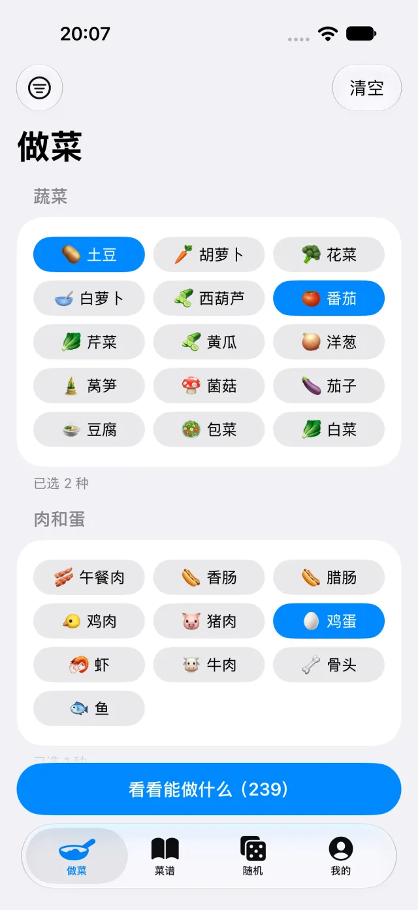
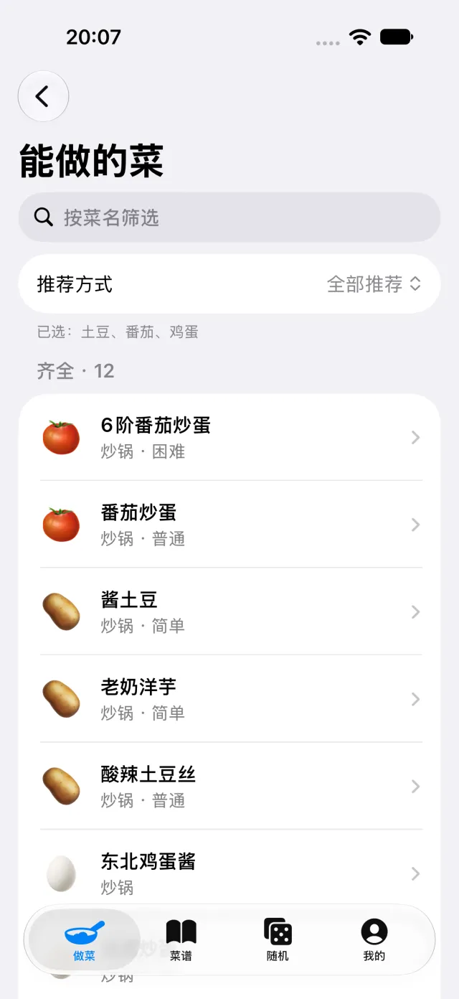
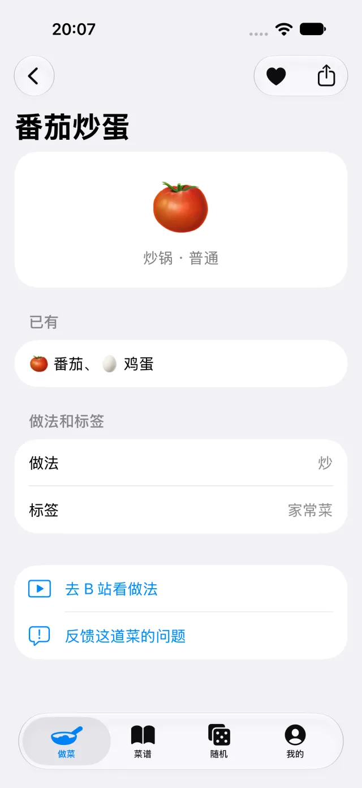
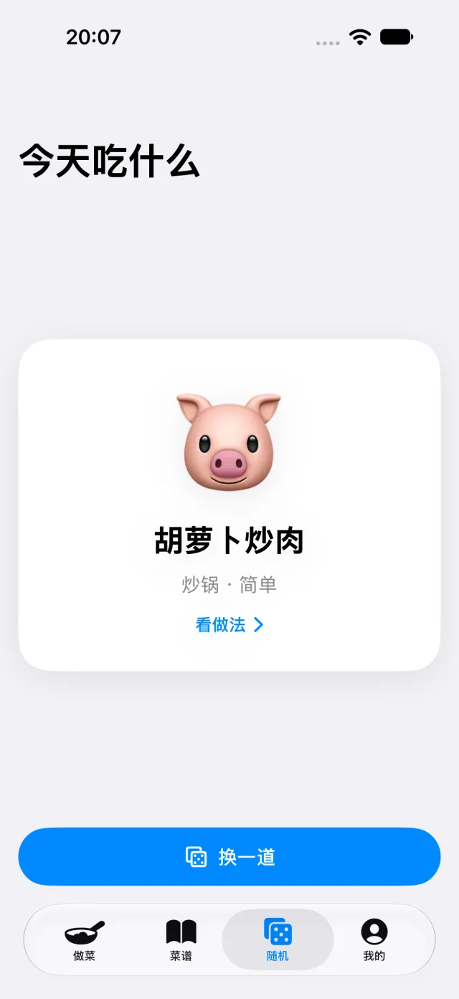

按食材和厨具找菜
把已有的食材放进选择里，再按手边厨具、做法、口味或难度筛选。知道自己能做什么，比盯着菜名发愁轻松一些。
云食册是「食用手册」的原生 iOS 应用。选几样家里有的食材，看看手边的厨具，从能做的家常菜里，挑一道今天想吃的。
找菜、看做法，再把喜欢的留给下一顿。少纠结一会儿，慢慢做好一顿饭。
基础做菜功能无需登录，网页版可直接使用。
iOS 尚未在 App Store 上架
正在准备发布，当前请先使用网页版。了解版本状态

不用先想好菜名。
从眼前有的东西开始就好。
点选食材，也可以用一句话描述；再按厨具、口味和难度缩小范围。
看看哪些食材已经齐了，哪些还差一点，给这一顿留些选择。
打开图文做法，或前往来源网站看视频。喜欢的菜先收藏，下次接着做。
熟悉的食用手册，加上为 iPhone 准备的日常小工具。
把已有的食材放进选择里，再按手边厨具、做法、口味或难度筛选。知道自己能做什么，比盯着菜名发愁轻松一些。
iOS 版内置图文做法，常用正文可离线阅读；有视频来源的菜谱可以前往 B 站等网站继续查看。配图与外部视频需要网络。
把喜欢的菜留下，也能从浏览记录里找回刚刚看过的做法。下次打开，不必再从头寻找。
今天吃什么？随机看看，再换一道，给重复的日常菜单一点新选择。
iOS 版
记录自己的菜名、食材、厨具和做法备注，留下值得重复的细节。私人菜谱可主动导入、导出，方便保留备份。
iOS 版
记录放入时间和到期日，先看看哪些需要尽快用掉。需要时主动开启临期提醒，由设备在本地通知你。
以下为 iOS 开发版本的真实界面。点击图片可查看原图。
从家里已有的食材开始。

把今晚的选择列出来。

看食材，也看做法来源。

让一顿家常饭有点新意。
截图展示产品界面，不代表当前已在 App Store 提供下载。具体功能与界面以实际提供的版本为准。
食用手册网页版已经可以使用，打开即可找菜。云食册 iOS 版需要 iOS 17 或更新版本，目前尚未在 App Store 上架。
微信原生 SDK 与微信登录尚未接入，仅为后续计划。可用功能与登录方式以实际版本及后续公告为准。
打开食用手册网页版云食册是食用手册的原生 iOS 应用，沿用根据食材找菜的思路。网页版继续使用「食用手册」这个名字；iOS 版增加私人菜谱、冰箱与本地临期提醒等功能。
基础选食材、找菜和查看做法不要求注册或登录。提供云乐坊账号入口的版本中，登录是可选项；目前没有原生微信登录功能。
iOS 版尚未在 App Store 上架，本站暂未提供下载或 TestFlight 邀请链接。发布信息确认后会在本页更新；现在可以先使用网页版。
iOS 版的本地菜谱数据与内置图文正文可离线使用；配图加载、外部视频、账号服务与 iCloud 同步需要相应网络条件。网页版不承诺完整离线可用。
请使用相应版本提供的导出功能，定期保存收藏、浏览记录或私人菜谱。iOS 与网页版目前不会自动同步；文件迁移需要你主动操作。iCloud 同步也不能代替独立备份。
不能。日期和提醒用于帮助安排食材，不是食品安全检测。请结合包装说明、实际储存条件与食材状态判断；有过敏、特殊饮食或健康问题时，请向专业人士咨询。
产品问题、菜谱纠错、隐私与数据删除请求，都可以联系开发者。反馈时写下版本、遇到的问题和必要的截图，会更方便处理。